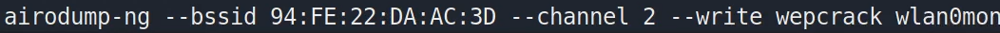
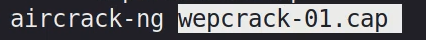
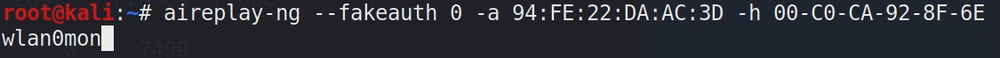
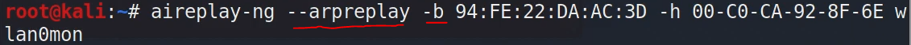

Fake Auth
Fake Auth  bu şekilde hedef bir ağ belirterek wepcrack adında bir dosyaya toplanan paketleri kaydettiriyoruz.
 ardından bu wepcrack-01.cap uzantılı dosyayı aircrack-ng ile çalıştırıyoruz ve bize “IV-PASSWORD” kısmında ki “IV” leri toplamaya başlıyor. O anda ağda ne kadar çok trafik olursa o kadar hızlı toplar. İşte bu noktada bu ağa fakeauth yöntemiyle kendimizi bağlanmış gibi gösterip ardından o ağda trafik ağı üreterek süreci hızlandırabiliriz.
Fakeauth Attack Bu atak kendimizi seçeceğimiz hedef bir ağa sanki bağlanmışız gibi göstermemizi sağlar.

Yukarıda olduğu gibi önce
-a <bağlanacağımız hedef MAC adresi> ardından
-h <kendi cihazımızın MAC adresi> ve
<wlan0mon> şeklinde bağlanacağımız arayüz ismi (wi-fi adapter vb) belirtip kendimizi o ağa bağlanmış gibi gösterebiliriz.
Ağa bu şekilde bağlanmış gibi gösterdikten sonra;

bu şekilde yine aireplay-ng ile “
--arpreplay -b <hedef MAC> -h <kendi MAC adresimiz> wlan0mon” komutu ile o ağda örneğin WEP algoritmasını kullanan bir ağ ise bu algoritmada ağ içinde paket alışverişi esnasında üretilen “IV-PASSWORD” şeklinde ki “IV” kısmını okuyabilir hale gelir ve de bu “IV” kısmı bi süre sonra tekrar eden algoritmalar oldukları için
aircrack-ng yöntemiyle kolayca “PASSWORD” kısmına erişip şifreyi kırabiliriz.